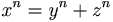

De: La Frikipedia, la enciclopedia extremadamente seria.
De: La Frikipedia, la enciclopedia extremadamente seria. De: La Frikipedia, la enciclopedia extremadamente seria.
«La matemática es la hermana lesbiana de la biología»
Como todo lo que ocurre en este “apartado rincón del universo, desperdigado de innumerables y centelleantes sistemas solares” que se entrelazan entre sí y forman un enorme torbellino que da vueltas y vueltas, en torno a un eje imaginario, perpendicular al plano que pasa por el centro de masas de la galaxia Teletubbia, y que pasa por la recta que forma el Planeta Agostini con la barriga de Falete; el Cálculo, comienza con C.
Como toda bestia viviente sabe, Chuck Norris nace en Schrödinger utilizando, cómo no, la patada giratoria.
Definicion de diccionario,Cálculo: Polvo blanco para las hemorroides
Años después, los líos chungos que azotaron la contrarrefoma, que surge cuando Lutero, programador religioso de la competencia, saca el Religión OS X, y ambas compañías luchan en una serie de guerras por el control de la Religión. Durante este tiempo, el matemático más destacado es Pierre de Fermat cuyos teoremas más importantes son
El Teorema Chiquitico de Fermat: Dados dos primos a y p, hay un 25% de posibilidades de que la madre de uno sea la hermana del padre del otro, a no ser que el padre de a sea hermano del padre o madre del otro y la madre de a sea al mismo tiempo hermana del padre o madre del otro, en cuyo caso las probabilidades serán del 50%.
El superteorema de Fermat: Al colega Pierre, le gustaba mucho retar a los canis de la época en los bares y apostaba el dinero de su pensión a que nadie encontraba una solución a su superteorema: siempre que n sea mayor que 2. No obstante, el mayor genio matemático de todos los tiempos, Homer J. Simpson ha demostrado en varias ocasiones que... ¡Este teorema es falso! Fermat muere arruinado, tras pagarle a Homer los ahorros de su vida.
Además de Fermat, había bastantes genios matemáticos homosexuales más como Escaldano, Tortuglia, Pascual... Eran homosexuales porque preferían hacer cuentas antes que encontrar la forma de abrir los malditos cinturones...
Por fin, el matemático Renato Descartes, encuentra indirectamente la forma de abrir el cinturón de castidad de su criada. Con la imprenta de su vecino Gutten Beer propaga el secreto por todo el mundo, comenzando así la Edad Moderna. Es una época de la que sabemos muy pocas cosas, al contrario que en la Edad Media, pues tras 1000 añazos de abstinencia, se “arrejuntó el hambre con las ganas de comer” y nadie se preocupaba por documentar la historia. Esto nos confirma la teoría de que los matemáticos modernos también son mariquitas.
Dos figuras muy importantes desde el origen matemático, el (0,0,0), son Laifnich. Newton y Laifnich (también conocido como Drácula), además de ser los Rasca y Pica de la época, descubrieron el Cálculo, pero como no se pusieron de acuerdo respecto quién lo descubrió antes, tuvieron que resolver el asunto con un duelo de baile, ganando Newton por ser el suyo más dinámico, expresivo y sensual. Newton llamó al principio a la cosa esa que inventó el Cálculo de las Fluxiones, pero a su segunda muerte, se le decidió llamar Cálculo Infinitesimal para así recalcar su estado de inmortalidad.
Después de este par de individuos, tiene lugar la -II Guerra Mundial, que enfrentó espartanos contra estadounidenses. Como durante esta época la Hans considerado después de Yamcha y de Homer, el mayor matemático de todos los tiempos.
Existen dos teorías sobre el origen del cálculo. La más extendida de ellas, sostiene que el Cálculo, junto con el Álgebra Lineal, han surgido para putear a los pobres estudiantes de primero de carrera, de ingenierías y ciencias con continuos suspensos y comeduras de tarro.

|
Proverbio típico estudiantil:
-Cómo llevas las integrales impropias?: -Ein? |

|
La otra teoría con la que tan solo se especula es que el cálculo surge con los problemas de hallar pendientes de curvas, tangentes a curvas, áreas de curvas, longitudes de curvas, las curvas de Aria Giovanni, volúmenes de cuerpos, los volúmenes de Aria Giovanni, centros de gravedad de cuerpos, el centro de gravedad de Aria Giovanni... No es de extrañar por tanto que Aria sea considerada después de Yamcha, Homer y Hans la mayor matemática de todos los tiempos.
Los procesos llevados a cabo por el cálculo (integración y derribación) se aplican a funciones. No obstante y sin embargo, es conveniente no confundir lo que entendemos matemáticamente por función de otros posibles significados como:
Continuando con los ejemplos de canis, una función es por ejemplo la expresión matemática que relaciona la estupidez de un cani con el tamaño de su visera, el número de canis respecto al de pijos... Así como el número de patadas giratorias por unidad de tiempo. Las funciones se pueden representar gráficamente tal y como aparece en el margen.
Los principales tipos de funciones elementales son los siguientes:Se pueden sumar, robar, dividir, multiplicar... funciones entre sí, pero lo que no se puede hacer nunca es dividirlas entre 0, quienes lo hagan, reproduzcan, plagien o comuniquen públicamente la división por 0, sin autorización expresa de su titular incurrirán en un delito castigado con penas de hasta cinco años de prisión.
EL CÁLCULO INFINITESIMAL DE LAS MANZANAS
Se pensaba que los átomos se movían según las leyes de Newton,y podían predecirsecomo el caer de las manzanas en la tarde de otoño. Los átomos son muy grandes.Los vacuosos átomos… Es tan vacío un átomo como el sistema solar.Resultó ser un inmenso vacío desolado,un espacio tan vasto y misterioso como el de los cielos.Una manzana son unos elementos:hidrógeno, oxígeno, carbono… como también una mujer son los mismos elementos con los mismos compuestos:agua, azúcar… Manzana y mujer. Aun los quasares están formados de nuestra materia familiar. No hay átomo de hidrógeno viajando en el espacio y el tiempo que no pueda evolucionar trasmutándose en helio. Con una gran economía de recursos hiciste el universo. Y este planeta raro del sistema solar que girando, girando, se entendió a sí mismo. Adquirió mente y amor. Esta tierra en forma de manzana(aunque para Colón era como una pera, o un pecho de mujer con el paraíso en el pezón)
«¡Hasta el infinito, y más allá!»
~ Buzz Light Year , considerado el mayor matemático de todos los tiempos después de Yamcha, Homer, Hans y Aria.
Todas las operaciones del cálculo son siempre límites. Para explicar mejor este concepto, nos serviremos de los límites más corrientes:
Decimos que hay límites indeterminados cuando no se sabe muy bien donde están, los casos más típicos de indeterminación:
| No se sabe muy bien donde está el límite entre el amor y el odio. | |
| No se sabe muy bien donde está el límite entre morado y el fucsia. | |
| No se sabe muy bien donde está el límite entre el bien o el mal. |
| |
|
Álgebra y Aritmética
Estadística
Cálculo
|
Autor(es):